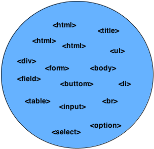
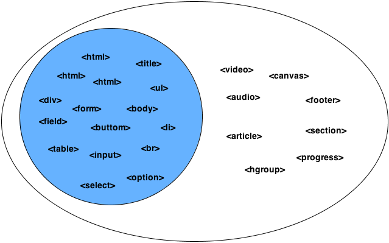
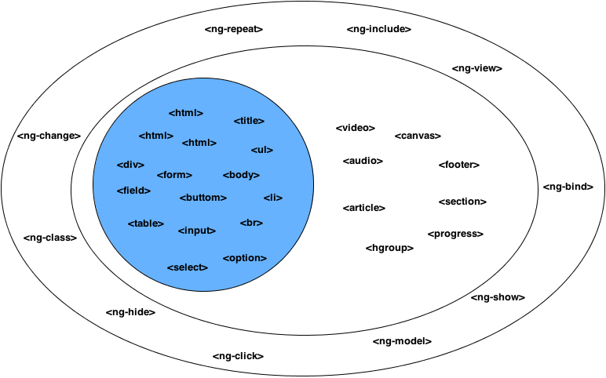

Hello Angular JS
@f0rmig4
- Analista Desenvolvedor Web
- Entusiasta Software Livre
- Organizador GU Mobile-rs
- Colaborador Mozilla Brasil
HTML


Web Componentes
<gravatar></gravatar>
ex
MV* ?
Show me the code
appCases ?
builtwith.angularjs.orgGitHub
- 14,650 stars
- 4,359 repository public
- 382 contributors
- 3,490 issues closed
- 660 issues opens
25-09-2013
Outros
- Angular.js
- Backbone.js
- Ember.js
- Canjs
Todo MVC
Helping you select an MV* framework
siteReferências
- Web site: http://angularjs.org
- Tutorial: http://docs.angularjs.org/tutorial
- API Docs: http://docs.angularjs.org/api
- Developer Guide: http://docs.angularjs.org/guide